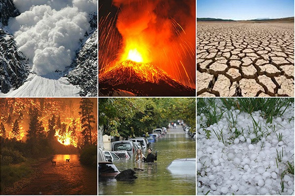
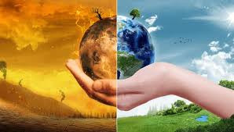

<HTML>


</html>

      <HEAD>
             <TITLE>Calentamiento global 3</title>
      </HEAD>

<H1>Calentamiento Global</H1>


<p><h3>El calentamiento global se constituye por la absorción de la energía solar por parte de la tierra. La tierra al calentarse desprende calor a la atmósfera en forma de rayos infrarrojos. Sin embargo, parte de este calor vuelve a ser remitido a la superficie terrestre y la consecuencia es el recalentamiento de la misma. No obstante, aunque el efecto invernadero es un fenómeno natural y necesario para la Tierra. Los gases de efecto invernadero tienen un impacto cada vez mayor en el día a día del mundo entero. Hacemos un recorrido por la ciencia para explicar qué es exactamente el calentamiento global que provoca el cambio climático y cuáles son sus consecuencias. Estos cambios pueden ser naturales, pero desde el siglo XIX, las actividades humanas han sido el principal motor del cambio climático, debido principalmente a la quema de combustibles fósiles, como el carbón, el petróleo y el gas, lo que produce gases que atrapan el calor. Se postula que si el aumento de la temperatura promedio global es mayor a 4ºC comparado con las temperaturas preindustriales, en muchas partes del mundo ya los sistemas naturales no podrán adaptarse y, por lo tanto, no podrán sustentar a la población en la manera en que se agotaran los recursos naturales.</h3></p>

<br>  
  <center></center>

<br>
  <center></center>

<br>
<p><h3>El calentamiento global resulta del aumento del efecto invernadero, un proceso en el que la radiación térmica emitida por la Tierra queda atrapada en la atmósfera debido a los gases con ese efecto (GEI). Su presencia es natural y necesaria para mantener la temperatura del planeta en unos valores habitables.
"Las emisiones antropogénicas recientes de GEI son las más altas de la historia", señala el último informe del IPCC. El cambio climático puede ser originado "por procesos naturales internos o por forzamientos externos también naturales como la modulación en los ciclos solares o las erupciones volcánicas. También puede ser causado por cambios inducidos por el hombre de forma persistente en la composición de la atmósfera", amplía la CMNUCC. Y es, en este segundo caso, el de las causas antropogénicas, cuando se habla más específicamente del calentamiento global. Es decir: el cambio climático puede tener causas naturales o antropogénicas, mientras que las causas del calentamiento global son siempre producto de la actividad humana.</h3></p>

<p><h3>Llevamos años con una repetición constante de titulares sobre nuevos récords de calor en España y el mundo. Según los registros cada verano es más cálido que el anterior. Pero en 2023, las temperaturas batieron todos los récords. Según los datos del Servicio de Cambio Climático de Copérnico (C3S) de la Unión Europea fue el año más caluroso desde que se empezaron los registros en 1850. La temperatura subió 1,48ºC de media con respecto a antes del inicio de la Revolución Industrial. Este aumento de temperatura se acerca peligrosamente al límite que según los científicos no deberíamos superar.</h3></p>


<p><h3>En la COP28 de diciembre de 2023, se concluyó con un llamamiento a “alejarse” de los combustibles fósiles. Según la nota de prensa publicada por Naciones Unidas tras la conclusión de la reunión, su secretario general, Antonio Guerras, afirmó que limitar el calentamiento global a 1,5°C, uno de los objetivos clave establecidos en el histórico Acuerdo de París de 2015, "será imposible sin la eliminación progresiva de todos los combustibles fósiles", como lo reconoce una coalición de países cada vez más amplia y diversa.</h3></p>

<br>
  <center></center>

<br>


<a href="file:///D:/calentamiento%20Global%20pagina%20web/.HTML">Volver a la pagina...</a>

</body>


</HTML>
